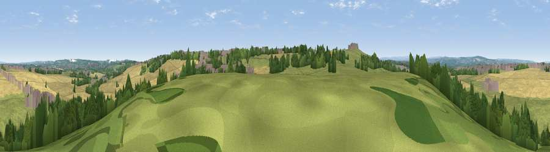

Viewpoint near Ferryhill
#25856 in England · top 53% of its area beats it · near Ferryhill · access?Where it is
The exact computed spot (NZ 28075 33325). Click the marker for map links.
Public access: no public right of way or access land is recorded at this exact spot — it may be on private land. Computed from Natural England's CRoW access layer and OpenStreetMap rights of way — not the legal definitive map. Always verify locally.
The view, rendered

A 360° render of this exact spot computed from the terrain model, tree cover and land cover — summer colours, afternoon light, calibrated against photographs of famous viewpoints. Real trees, hedges and buildings will differ in detail.
The panorama
Grey silhouette: terrain skyline in each direction (720 bearings, Earth curvature and refraction included). Dashed green: skyline with trees (+15 m) and buildings (+8 m) as obstacles. Blue strip: how far the ground is visible on each bearing.
Where the view opens
Wedge length = distance to the farthest visible ground on that bearing (vegetation-aware). Rings at 10, 25 and 50 km.
What fills the view
39% grassland · 37% cropland · 16% woodland · 7% built-up
Angular shares of the visible panorama (visual magnitude), not map area. Landscape diversity 0.53 (0–1 Shannon).
Key numbers
More beautiful places nearby
The staircase of upgrades: each row has a higher view potential than everything closer. Driving times are estimates from straight-line distance, calibrated against real road routing — check an actual route before setting out.
| Place | Direction | Drive | Score |
|---|---|---|---|
| Viewpoint near Ferryhill | SW · 1 km | ~3 min | 61.3 |
| Westerton Hill | WSW · 5 km | ~10 min | 69.0 |
| Viewpoint near Quarrington Hill | NE · 7 km | ~14 min | 73.1 |
| Viewpoint near Houghton-le-Spring | NNE · 19 km | ~33 min | 73.7 |
| Viewpoint near Houghton-le-Spring | NNE · 20 km | ~33 min | 76.0 |
| Pontop Pike | NNW · 23 km | ~39 min | 77.8 |
| Viewpoint near Newton Under Roseberry | SE · 31 km | ~48 min | 78.3 |
| Viewpoint near Lazenby | ESE · 32 km | ~50 min | 86.4 |
54.69418, -1.56595 · source: screening · position refined by local search. Computed location — check access rights before visiting.